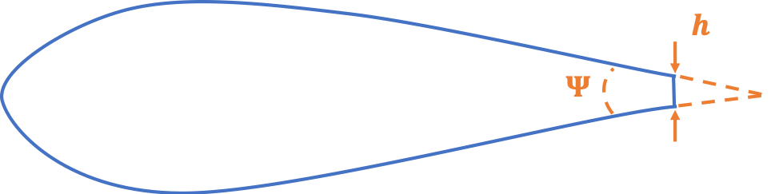
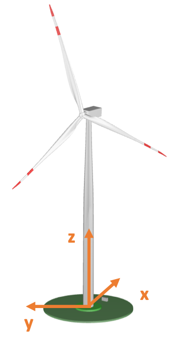

4.5.7. AeroDyn에서 공력소음 모델 사용하기
이 문서의 라이브 버전은 다음에서 확인할 수 있습니다. https://openfast.readthedocs.io/. 항공음향 모델을 실행하려면 플래그 CompAA 를 다음으로 설정해야 합니다. 참 입력 블록에 있는 AeroDyn 기본 입력 파일의 14번째 줄에 있는 AeroDyn 주 입력 파일의 입력 블록 14번째 줄에 일반 옵션. 플래그가 다음으로 설정되면 참 입력 블록에 있는 AeroDyn 기본 입력 파일의 14번째 줄에 있는, 다음 줄에는 공력음향 모델에 대한 입력이 포함된 파일의 이름이 포함되어야 합니다. 이에 대해서는 다음에서 설명합니다. 섹션 4.5.7.1. 현재 이 모듈은 MHK 터빈과 함께 사용할 수 없습니다.
1------- AERODYN INPUT FILE -----------------------------------------------
2IEA Wind Task 37 land-based reference wind turbine
3====== General Options ===================================================
4False Echo - Echo the input to "<rootname>.AD.ech"? (flag)
5"default" DTAero - Time interval for aerodynamic calculations {or "default"} (s)
61 Wake_Mod - Wake/induction model (switch) {0=none, 1=BEMT, 3=OLAF} [Wake_Mod cannot be 2 or 3 when linearizing]
70 TwrPotent - Type tower influence on wind based on potential flow around the tower (switch) {0=none, 1=baseline potential flow, 2=potential flow with Bak correction}
80 TwrShadow - Calculate tower influence on wind based on downstream tower shadow (switch) {0=none, 1=Powles model, 2=Eames model}
9False TwrAero - Calculate tower aerodynamic loads? (flag)
10False CavitCheck - Perform cavitation check? (flag) [UA_Mod must be 0 when CavitCheck=true]
11False NacelleDrag - Include Nacelle Drag effects? (flag)
12True CompAA - Flag to compute AeroAcoustics calculation [used only when Wake_Mod = 1 or 2]
13"AeroAcousticsInput.dat" AA_InputFile - AeroAcoustics input file [used only when CompAA=true]
14====== Environmental Conditions ===================================================================
15"default" AirDens - Air density (kg/m^3)
16
17File continues...
4.5.7.1. 기본 입력 파일
항공음향학 기본 입력 파일은 실행해야 하는 분석에 따라 적절하게 설정되어야 하는 일련의 입력 및 플래그로 구성됩니다. 이는 일반 옵션, 공력음향 모델, 관찰자 입력 및 출력 하위 필드로 나뉩니다.
일반 옵션부터 시작하면 다음과 같습니다.
에코 – True/False: 올바른 템플릿으로 입력 파일을 다시 작성하는 옵션
DT_AA – 부동(Float): 공력음향 계산의 시간 단계. 시간 단계의 배수만 DTAero AeroDyn의 를 사용할 수 있습니다. 기본값으로 설정하면 DTAero 시간 단계가 채택됩니다.
AAStart – 부동(Float): AeroAcoustics 모듈이 실행된 후의 시간입니다.
BldPrcnt – 플로트: 소음 방출에 기여하는 블레이드 팁에서 측정된 블레이드 범위의 백분율 값입니다. 100%는 칼날 끝부터 뿌리까지 전체 칼날에 해당합니다.
Aeroacoustics Models 필드에는 실제 소음 모델에 대한 모든 플래그가 나열됩니다.
티모드 – 정수 0/1/2: 난류 유입 소음 모델을 설정하는 플래그; 0은 끄고, 1은 다음에서 논의된 Amiet 모델에 해당합니다. 섹션 4.5.4.1.1, 2는 제시된 단순화된 Guidati 모델에 해당합니다. 섹션 4.5.4.1.2.
TICalcMeth – 정수 1/2: 입사 난류 강도에 대한 계산 방법을 설정하는 플래그입니다. 1로 설정하면 입사 난류 강도가 사용자 정의됩니다. 2로 설정하면 입사 유동의 시간 이력으로부터 입사 난류 강도가 추정됩니다.
TI – 부동 소수점: 사용자 정의 값 \(TI\)는 Amiet 모델에 사용된 회전자 입사 난류 강도입니다.
avgV – Float: 스케일링에 사용되는 평균 풍속 값 \(TI\) 를 블레이드 섹션 입사 난류 강도로 변환합니다.
리터브 – 부동 소수점: 값 \(L_{turb}\) 는 Amiet 모델에 사용된 난류 길이 척도를 추정하는 데 사용되었습니다.
TBLTEMod – 정수 0/1/2: TBL-TE 노이즈 모델을 설정하는 플래그; 0은 모델을 끄고, 1은 Brooks-Pope-Marcolini(BPM) 에어포일 소음 모델을 사용합니다(참조). 섹션 4.5.4.2.1), 2는 다음에 설명된 TNO 모델을 사용합니다. 섹션 4.5.4.2.2.
BLMod – 정수 1/2: 경계층 특성에 대한 계산 방법을 설정하는 플래그; 1은 BPM 모델의 단순화된 방정식을 사용하고, 2는 다음에 설명된 대로 파일을 로드합니다. 섹션 4.5.7.2. 다음과 같은 경우에만 사용됩니다. TBLTEMod 는 0과 다릅니다.
TripMod – 정수 0/1/2: BLMod가 1로 설정된 경우 다른 반경험적 매개변수가 트립되지 않은 경계층에 사용됩니다(TRipMod=0), 심하게 트립된 경계층(TRipMod=1) 또는 약간 트립된 경계층(TRipMod=2); 2는 일반적으로 작동 중인 풍력터빈에 사용되는 반면, 1은 풍동 익형 모델에 자주 사용됩니다.
LamMod – 정수 0/1: 층류 경계층을 활성화하기 위한 플래그 – 와류 발산 모델, 섹션 4.5.4.3.
TipMod – 정수 0/1: 팁 소용돌이 모델을 활성화하기 위한 플래그, 섹션 4.5.4.4.
RoundedTip – 참/거짓: if TipMod=1, 이 플래그는 둥근 팁(True)과 사각형 팁(False) 사이를 전환합니다. 섹션 4.5.4.4.
알프라트 – 플로트: 블레이드 팁의 양력 계수 곡선의 기울기 값. 참조 섹션 4.5.4.4.
BluntMod – 정수 0/1: 활성화할 플래그(블런트모드=1) 뒷전 무뚝뚝함 – 와류 발산 모델, 참조 섹션 4.5.4.5. 플래그가 1로 설정되면 후행 에지 형상은 다음에 설명된 대로 파일에 지정되어야 합니다. 섹션 4.5.7.2.
관찰자 위치 필드에는 관찰자 수(NrObsLoc)와 해당 위치가 지정된 파일에 대한 경로가 포함됩니다. 참조 섹션 4.5.7.3.
마지막으로 출력 세트에는 출력 데이터에 대한 몇 가지 옵션이 포함되어 있습니다.
A가중치 – True/False: A-가중치 보정을 사용하여(True) 또는 없이(False) 음압 레벨을 보고할지 여부를 설정하는 플래그입니다. 참조 섹션 4.5.5.3.
NAAOutFile – 정수 1/2/3/4: 원하는 출력 파일을 설정하는 플래그. 1로 설정하면 매 순간 전체 음압 레벨의 값이 관찰자당 DT_AA 시간 간격이 파일에 인쇄됩니다. 2로 설정하면 첫 번째 출력에는 총 음압 레벨 스펙트럼이 관찰자별 시간 단계별로 인쇄되는 두 번째 파일이 수반됩니다. 3으로 설정하면 두 개의 첫 번째 출력 파일에는 소음 메커니즘당 음압 레벨 스펙트럼이 관찰자별 시간 단계별로 인쇄되는 세 번째 파일이 수반됩니다. 4로 설정하면 노드당, 블레이드당, 관찰자당 및 시간 단계당 전체 음압 레벨 값이 포함된 네 번째 파일이 생성됩니다.
다음 줄은, AAOutFile에는 출력을 저장하는 데 사용되는 파일의 루트 이름이 포함되어 있습니다. "default"로 설정하면 기본 출력 파일 루트 이름이 사용됩니다. 파일 이름에는 다음을 기준으로 1, 2, 3, 4 플래그가 추가됩니다. NAAOutFile 옵션.
파일은 END 명령으로 닫혀야 합니다.
1------- AeroAcoustics Module INPUT FILE -------------------------------------------------------------
2IEA task 37 RWT turbine -- https://github.com/IEAWindTask37/IEA-3.4-130-RWT
3====== General Options ============================================================================
4False Echo - Echo the input to "<rootname>.AD.NN.ech"? (flag)
50.1 DT_AA - Time interval for aeroacoustics calculations (s), must be a multiple of DT_Aero from AeroDyn15 (or "default")
60 AAStart - Time after which the AeroAcoustics module is run (s)
770 BldPrcnt - Percentage of the blade span, starting from the tip, that will contribute to the overall noise levels. (float)
8====== Aeroacoustic Models ============================================================================
92 TIMod - Turbulent Inflow noise model {0: none, 1: Amiet 2: Amiet + Simplified Guidati} (switch)
101 TICalcMeth - Method to estimate turbulence intensity incident to the profile {1: given table, 2: computed on the fly} (switch) [Only used if TIMod!=0]
110.1 TI - Rotor-incident wind turbulence intensity (-) [Only used if TiCalcMeth == 1]
128 avgV - Average wind speed used to compute the section-incident turbulence intensity (m/s) [Only used if TiCalcMeth == 1]
1340 Lturb - Turbulent length scale in Amiet model (m) [Only used if TIMod!=0]
141 TBLTEMod - Turbulent Boundary Layer-Trailing Edge noise calculation {0: none, 1:BPM, 2: TNO} (switch)
151 BLMod - Calculation method for boundary layer properties, {1: BPM, 2: Pretabulated} (switch)
161 TripMod - Boundary layer trip model {0:no trip, 1: heavy trip, 2: light trip} (switch) [Only used if BLMod=1]
170 LamMod - Laminar boundary layer noise model {0:none, 1: BPM} (switch)
180 TipMod - Tip vortex noise model {0:none, 1: BPM} (switch)
19True RoundedTip - Logical indicating rounded tip (flag) [Only used if TipMod=1]
201.0 Alprat - Tip lift curve slope (Default = 1.0) [Only used if TipMod=1]
210 BluntMod - Trailing-edge-bluntness – Vortex-shedding model {0:none, 1: BPM} (switch)
22====== Observer Input ===================================================================
23"AA_ObserverLocations.dat" ObserverLocations - Name of file containing all observer locations X Y Z (-)
24====== Outputs ====================================================================================
25False AWeighting - A-weighting Flag (flag)
263 NrOutFile - Number of Output files. 1 for Time Dependent Overall SPL, 2 for both 1 and Frequency and Time Dependent SPL as well, or 3 for both 1 and 2 and Acoustics mechanism dependent, 4 for 1-3 and the overall sound pressure levels per blade per node per observer
27"IEA_LB_RWT-AeroAcoustics_" AAOutFile - No Extension needed; the resulting file(s) will end in #.out. Use "Default" to use the default output file name from OpenFAST.
28END of input file (the word "END" must appear in the first 3 columns of this last OutList line)
29---------------------------------------------------------------------------------------
4.5.7.2. 경계층 입력 및 후행 가장자리 형상
깃발이 BLMod 는 2와 동일하게 설정되며 경계층의 사전 표로 작성된 속성이 제공되어야 하며 난류 경계층 - 뒷전 소음 모델에서 사용됩니다. 파일 이름은 익형 극계수가 있는 파일의 입력 중 BL_file 필드에 지정됩니다. 공기역학적 스테이션당 하나의 익형 파일을 지정해야 합니다.
1! ------------ AirfoilInfo Input File ------------------------------------------
2! AeroElasticSE FAST driver
3!
4!
5! ------------------------------------------------------------------------------
6DEFAULT InterpOrd ! Interpolation order to use for quasi-steady table lookup {1=linear; 3=cubic spline; "default"} [default=1]
71 NonDimArea ! The non-dimensional area of the airfoil (area/chord^2) (set to 1.0 if unsure or unneeded)
8@"AF20_Coords.txt" NumCoords ! The number of coordinates in the airfoil shape file. Set to zero if coordinates not included.
9AF20_BL.txt BL_file ! The file name including the boundary layer characteristics of the profile. Optional and ignored if the aeroacoustic module is not called.
101 NumTabs ! Number of airfoil tables in this file. Each table must have lines for Re and Ctrl.
11! ------------------------------------------------------------------------------
12! data for table 1
이 예에서는 파일 이름이 AF20_BL.txt에는 지정된 수의 레이놀즈 수인 ReListBL과 지정된 공격 각도 수인 aoaListBL에 대해 표로 작성된 8개의 입력이 포함되어 있습니다. 무차원적으로 정의되고 후연 위와 아래에 있는 에어포일의 흡입 및 압력 측면에 대해 제공되어야 하는 입력은 다음과 같습니다.
Ue_Vinf – 경계층 상단의 유속
디스타 – \(\delta^{*}\), 경계층 변위 두께
델타 – \(\delta\), 공칭 경계층 두께
CF – 마찰 계수.
다음 예에서는 Python 스크립트 덕분에 파일이 생성되었습니다. 경계층 솔버인 XFoil을 실행하는 4 입니다. 특히 XFoil은 기본적으로 반환되지 않습니다. \(\delta\), 그러나 경계층 운동량 두께, \(\theta\). \(\delta\) 는 다음 식을 사용하여 재구성할 수 있습니다. [aa-DG87]:
여기서 \(H\) 는 운동학적 형상 인자이며 XFoil의 표준 출력 중 하나이기도 합니다. 일반적으로 레이놀즈 수와 받음각의 전체 범위에 대해 이러한 값을 얻는 것이 불가능하기 때문에 코드는 마지막으로 사용 가능한 값을 채택하고 경고 화면에 인쇄하도록 설정됩니다.
깃발이 BluntMod 가 1로 설정되면 후행 가장자리의 세부 형상도 범위를 따라 정의되어야 합니다. 두 가지 입력, 즉 각도가 제공되어야 합니다. \(\Psi\) 프로파일의 흡입측과 압력측 사이, 뒷전 지점 직전과 높이, 후미의 \(h\). \(\Psi\) 는 각도로 정의되어야 하지만, \(h\) 는 미터 단위입니다. BPM 뒷전 무뚝뚝함 모델은 이 두 매개변수에 매우 민감하지만 실제 블레이드에 대해서는 결정하기가 쉽지 않은 경우가 많습니다. 그림 4.26 는 두 개의 입력을 보여줍니다.


그림 4.26 기하학적 매개변수 뒷전 무뚝뚝함의 \(\mathbf{\Psi}\) 및 \(\mathbf{h}\) 뒷전 두께의
다음 중 하나의 값 \(\Psi\) 및 다음 중 하나의 값 파일당 \(h\) 를 정의해야 합니다. 플래그가 다음과 같은 경우에는 이 값이 사용되지 않습니다. BluntMod 는 0으로 설정됩니다.
1! Boundary layer characteristics at the trailing edge for the airfoil coordinates of /Users/pbortolo/work/2_openfast/noise/verifyAA/OpenFAST_IEA_LB_RWT/Airfoils/AF20_Coords.txt
2! Legend: aoa - angle of attack (deg), Re - Reynolds number (-, millions), PS - pressure side, SS - suction side, Ue_Vinf - edge velocity (-), Dstar - displacement thickness (-), Delta - nominal boundary layer thickness (-) Cf - friction coefficient (-)
34 ReListBL - Number of Reynolds numbers (it corresponds to the number of tables)
430 aoaListBL - Number of angles of attack (it corresponds to the number of rows in each table)
50.50 - Re
6aoa Ue_Vinf_SS Ue_Vinf_PS Dstar_SS Dstar_PS Delta_SS Delta_PS Cf_SS Cf_PS
7(deg) (-) (-) (-) (-) (-) (-) (-) (-)
8-5.00000 8.39390e-01 -8.37360e-01 7.43700e-03 1.07730e-02 2.75094e-02 5.15849e-02 1.13200e-03 1.58200e-03
9-3.96552 8.42050e-01 -8.40230e-01 8.26600e-03 9.29500e-03 2.98650e-02 4.87153e-02 1.04400e-03 1.85700e-03
10-2.93103 8.45320e-01 -8.43690e-01 9.08800e-03 8.10000e-03 3.19790e-02 4.70045e-02 9.58000e-04 2.16500e-03
11-1.89655 8.48230e-01 -8.46710e-01 9.97400e-03 7.33700e-03 3.44024e-02 4.50456e-02 8.90000e-04 2.35800e-03
12-0.86207 8.51550e-01 -8.50140e-01 1.09130e-02 6.54100e-03 3.68822e-02 4.30884e-02 8.26000e-04 2.59900e-03
13 0.17241 8.55000e-01 -8.53670e-01 1.18900e-02 5.92900e-03 3.96199e-02 4.27416e-02 7.79000e-04 2.87100e-03
14 1.20690 8.63820e-01 -1.04207e+00 1.22130e-02 9.89500e-03 4.18890e-02 1.68156e-02 8.18000e-04 -1.77000e-04
15 2.24138 8.61500e-01 -8.60210e-01 1.40420e-02 4.88700e-03 4.51813e-02 3.93105e-02 6.78000e-04 3.28700e-03
16 3.27586 8.64430e-01 -8.63080e-01 1.52900e-02 4.57300e-03 4.85938e-02 3.82233e-02 6.39000e-04 3.44000e-03
17 4.31034 8.67960e-01 -8.66600e-01 1.65660e-02 4.09100e-03 5.17768e-02 3.63749e-02 5.96000e-04 3.69000e-03
18 5.34483 8.72300e-01 -8.70850e-01 1.81000e-02 3.81700e-03 5.43379e-02 3.52278e-02 5.09000e-04 3.86300e-03
19 6.37931 8.77930e-01 -8.76410e-01 1.98500e-02 3.39700e-03 5.69109e-02 3.31481e-02 4.18000e-04 4.13900e-03
20 7.41379 8.86840e-01 -8.85140e-01 2.22250e-02 3.15000e-03 5.81316e-02 3.19040e-02 2.64000e-04 4.36900e-03
21 8.44828 9.00620e-01 -8.98660e-01 2.54290e-02 2.75900e-03 5.91946e-02 2.95298e-02 1.01000e-04 4.76300e-03
22 9.48276 9.20300e-01 -9.17700e-01 2.99830e-02 2.48300e-03 6.07767e-02 2.75551e-02 5.00000e-06 5.16000e-03
2310.51724 9.48080e-01 -9.44440e-01 3.80160e-02 2.13200e-03 6.65531e-02 2.48447e-02 -1.60000e-05 5.76800e-03
2411.55172 9.89560e-01 -9.84930e-01 5.83630e-02 1.85700e-03 8.76076e-02 2.18890e-02 -1.50000e-05 6.49000e-03
2512.58621 1.02883e+00 -1.02353e+00 8.80990e-02 1.66700e-03 1.21588e-01 2.00072e-02 -1.30000e-05 7.20200e-03
2613.62069 1.05789e+00 -1.05226e+00 1.18914e-01 1.51000e-03 1.57264e-01 1.78004e-02 -1.10000e-05 7.74800e-03
2714.65517 1.07975e+00 -1.07394e+00 1.48726e-01 1.41900e-03 1.91423e-01 1.65710e-02 -1.00000e-05 8.15600e-03
2815.68966 1.09657e+00 -1.09067e+00 1.76430e-01 1.34400e-03 2.22657e-01 1.56180e-02 -9.00000e-06 8.50600e-03
2916.72414 1.11040e+00 -1.10441e+00 2.02883e-01 1.26100e-03 2.52158e-01 1.43276e-02 -9.00000e-06 8.80900e-03
3017.75862 1.12290e+00 -1.11682e+00 2.29606e-01 1.20600e-03 2.81695e-01 1.35432e-02 -8.00000e-06 9.07600e-03
3118.79310 1.13461e+00 -1.12844e+00 2.55478e-01 1.15500e-03 3.10143e-01 1.28744e-02 -8.00000e-06 9.34700e-03
3219.82759 1.14605e+00 -1.13974e+00 2.80923e-01 1.08200e-03 3.37970e-01 1.16844e-02 -8.00000e-06 9.61200e-03
3320.86207 1.15722e+00 -1.15073e+00 3.05117e-01 1.03800e-03 3.64240e-01 1.10866e-02 -7.00000e-06 9.87000e-03
3421.89655 1.16808e+00 -1.16138e+00 3.27770e-01 9.81000e-04 3.88826e-01 1.02373e-02 -7.00000e-06 1.01370e-02
3522.93103 1.17845e+00 -1.17148e+00 3.48909e-01 9.33000e-04 4.11299e-01 9.52780e-03 -7.00000e-06 1.03870e-02
3623.96552 1.18930e+00 -1.18205e+00 3.70277e-01 8.93000e-04 4.34300e-01 9.01762e-03 -7.00000e-06 1.06550e-02
3725.00000 1.19987e+00 -1.19227e+00 3.90503e-01 8.36000e-04 4.55921e-01 8.12755e-03 -7.00000e-06 1.09080e-02
381.00 - Re
39aoa Ue_Vinf_SS Ue_Vinf_PS Dstar_SS Dstar_PS Delta_SS Delta_PS Cf_SS Cf_PS
40(deg) (-) (-) (-) (-) (-) (-) (-) (-)
41-5.00000 8.34300e-01 -8.32480e-01 6.49600e-03 7.74600e-03 2.28566e-02 3.97467e-02 8.39000e-04 1.54900e-03
42-3.96552 8.37330e-01 -8.35790e-01 7.10100e-03 6.55800e-03 2.45059e-02 3.67266e-02 7.84000e-04 1.80000e-03
43-2.93103 8.40670e-01 -8.39370e-01 7.75600e-03 5.65600e-03 2.62162e-02 3.42658e-02 7.27000e-04 2.03700e-03
44-1.89655 8.44170e-01 -8.43070e-01 8.45300e-03 4.96000e-03 2.79616e-02 3.22259e-02 6.72000e-04 2.25700e-03
45-0.86207 8.47840e-01 -8.46890e-01 9.21600e-03 4.45100e-03 2.98142e-02 3.07238e-02 6.18000e-04 2.45400e-03
46 0.17241 8.51730e-01 -8.50900e-01 1.00790e-02 3.95100e-03 3.18738e-02 2.89503e-02 5.65000e-04 2.66300e-03
47 1.20690 8.55470e-01 -8.54730e-01 1.09340e-02 3.54400e-03 3.37289e-02 2.74209e-02 5.12000e-04 2.86100e-03
48 2.24138 8.59040e-01 -8.58320e-01 1.18130e-02 3.25200e-03 3.55603e-02 2.64490e-02 4.62000e-04 3.03800e-03
49 3.27586 8.63480e-01 -8.62770e-01 1.29500e-02 2.91700e-03 3.78947e-02 2.47691e-02 4.08000e-04 3.23200e-03
50 4.31034 8.67590e-01 -8.66830e-01 1.40320e-02 2.69800e-03 3.97441e-02 2.39342e-02 3.50000e-04 3.40400e-03
51 5.34483 8.72380e-01 -8.71540e-01 1.53110e-02 2.43000e-03 4.18407e-02 2.22446e-02 2.92000e-04 3.59200e-03
52 6.37931 8.78360e-01 -8.77360e-01 1.68420e-02 2.23600e-03 4.38267e-02 2.12352e-02 2.20000e-04 3.78300e-03
53 7.41379 8.86030e-01 -8.84810e-01 1.87390e-02 2.00100e-03 4.60113e-02 1.94428e-02 1.44000e-04 4.00100e-03
54 8.44828 8.96310e-01 -8.94850e-01 2.13480e-02 1.83100e-03 4.88127e-02 1.83696e-02 5.90000e-05 4.24200e-03
55 9.48276 9.25990e-01 -9.23230e-01 2.81520e-02 1.56900e-03 5.51012e-02 1.62260e-02 -1.00000e-06 4.73700e-03
5610.51724 9.66170e-01 -9.62320e-01 4.28900e-02 1.36700e-03 7.03103e-02 1.45187e-02 -9.00000e-06 5.34800e-03
5711.55172 1.00255e+00 -9.97860e-01 6.33540e-02 1.21700e-03 9.26255e-02 1.29836e-02 -7.00000e-06 5.90200e-03
5812.58621 1.03100e+00 -1.02578e+00 8.62500e-02 1.10600e-03 1.18923e-01 1.16999e-02 -6.00000e-06 6.34900e-03
5913.62069 1.05406e+00 -1.04857e+00 1.10634e-01 1.04100e-03 1.47132e-01 1.09721e-02 -6.00000e-06 6.70700e-03
6014.65517 1.07334e+00 -1.06769e+00 1.35720e-01 9.66000e-04 1.76016e-01 9.96935e-03 -5.00000e-06 7.01900e-03
6115.68966 1.08881e+00 -1.08308e+00 1.60129e-01 9.17000e-04 2.03832e-01 9.33244e-03 -5.00000e-06 7.27400e-03
6216.72414 1.10158e+00 -1.09579e+00 1.83765e-01 8.82000e-04 2.30423e-01 8.89329e-03 -5.00000e-06 7.49000e-03
6317.75862 1.11342e+00 -1.10758e+00 2.08205e-01 8.32000e-04 2.57695e-01 8.20477e-03 -4.00000e-06 7.69800e-03
6418.79310 1.12407e+00 -1.11817e+00 2.32504e-01 8.01000e-04 2.84583e-01 7.81234e-03 -4.00000e-06 7.88600e-03
6519.82759 1.13501e+00 -1.12904e+00 2.57953e-01 7.76000e-04 3.12682e-01 7.52201e-03 -4.00000e-06 8.07500e-03
6620.86207 1.14614e+00 -1.14008e+00 2.83630e-01 7.33000e-04 3.41005e-01 6.90325e-03 -4.00000e-06 8.27100e-03
6721.89655 1.15868e+00 -1.15248e+00 3.10888e-01 7.07000e-04 3.71055e-01 6.60979e-03 -4.00000e-06 8.48600e-03
6822.93103 1.17050e+00 -1.16410e+00 3.35623e-01 6.81000e-04 3.98279e-01 6.28286e-03 -3.00000e-06 8.69100e-03
6923.96552 1.18348e+00 -1.17683e+00 3.61314e-01 6.45000e-04 4.26528e-01 5.81057e-03 -3.00000e-06 8.91700e-03
7025.00000 1.19753e+00 -1.19058e+00 3.87323e-01 6.21000e-04 4.54991e-01 5.52432e-03 -3.00000e-06 9.15800e-03
715.00 - Re
72aoa Ue_Vinf_SS Ue_Vinf_PS Dstar_SS Dstar_PS Delta_SS Delta_PS Cf_SS Cf_PS
73(deg) (-) (-) (-) (-) (-) (-) (-) (-)
74-5.00000 8.23420e-01 -8.21880e-01 4.67200e-03 4.76700e-03 1.77334e-02 2.96859e-02 6.92000e-04 1.41000e-03
75-3.96552 8.25550e-01 -8.24400e-01 5.04400e-03 4.14000e-03 1.88321e-02 2.75480e-02 6.57000e-04 1.55000e-03
76-2.93103 8.27930e-01 -8.27220e-01 5.46200e-03 3.53900e-03 2.00407e-02 2.52464e-02 6.21000e-04 1.70500e-03
77-1.89655 8.30490e-01 -8.30120e-01 5.91700e-03 3.10400e-03 2.13254e-02 2.34284e-02 5.86000e-04 1.84000e-03
78-0.86207 8.33100e-01 -8.33000e-01 6.40000e-03 2.77600e-03 2.26264e-02 2.19701e-02 5.50000e-04 1.95800e-03
79 0.17241 8.35520e-01 -8.35690e-01 6.86100e-03 2.45300e-03 2.37731e-02 2.03359e-02 5.15000e-04 2.08300e-03
80 1.20690 8.38270e-01 -8.38660e-01 7.40600e-03 2.17500e-03 2.51176e-02 1.87906e-02 4.79000e-04 2.20700e-03
81 2.24138 8.41350e-01 -8.41880e-01 8.04900e-03 1.95800e-03 2.66635e-02 1.75032e-02 4.40000e-04 2.31900e-03
82 3.27586 8.43950e-01 -8.44520e-01 8.65200e-03 1.80300e-03 2.79650e-02 1.65339e-02 4.03000e-04 2.40900e-03
83 4.31034 8.48180e-01 -8.48810e-01 9.58300e-03 1.61000e-03 3.00737e-02 1.51804e-02 3.59000e-04 2.53200e-03
84 5.34483 8.53570e-01 -8.54090e-01 1.08300e-02 1.48600e-03 3.27612e-02 1.43249e-02 3.08000e-04 2.63700e-03
85 6.37931 8.72880e-01 -8.73060e-01 1.51570e-02 1.28200e-03 4.16833e-02 1.28096e-02 1.92000e-04 2.88700e-03
86 7.41379 8.92130e-01 -8.91760e-01 1.98220e-02 1.14700e-03 4.87740e-02 1.17767e-02 8.30000e-05 3.11600e-03
87 8.44828 9.17360e-01 -9.16020e-01 2.50640e-02 9.92000e-04 5.31945e-02 1.04181e-02 2.00000e-06 3.41900e-03
88 9.48276 9.42910e-01 -9.40410e-01 3.17040e-02 8.85000e-04 5.85499e-02 9.42477e-03 -1.00000e-06 3.70700e-03
8910.51724 9.64800e-01 -9.61630e-01 4.02300e-02 7.96000e-04 6.64893e-02 8.47323e-03 -2.00000e-06 3.96100e-03
9011.55172 9.86420e-01 -9.82570e-01 5.11880e-02 7.23000e-04 7.76623e-02 7.65452e-03 -2.00000e-06 4.20700e-03
9112.58621 1.00657e+00 -1.00210e+00 6.43270e-02 6.71000e-04 9.20001e-02 7.06023e-03 -2.00000e-06 4.43100e-03
9213.62069 1.02475e+00 -1.01984e+00 7.93340e-02 6.16000e-04 1.09051e-01 6.35528e-03 -1.00000e-06 4.64000e-03
9314.65517 1.04370e+00 -1.03850e+00 9.84840e-02 5.79000e-04 1.31195e-01 5.91001e-03 -1.00000e-06 4.84500e-03
9415.68966 1.06004e+00 -1.05467e+00 1.18503e-01 5.43000e-04 1.54410e-01 5.44594e-03 -1.00000e-06 5.02500e-03
9516.72414 1.07448e+00 -1.06905e+00 1.39604e-01 5.14000e-04 1.78759e-01 5.05912e-03 -1.00000e-06 5.18500e-03
9617.75862 1.08720e+00 -1.08175e+00 1.61656e-01 4.93000e-04 2.03997e-01 4.79726e-03 -1.00000e-06 5.32500e-03
9718.79310 1.09867e+00 -1.09324e+00 1.84226e-01 4.68000e-04 2.29525e-01 4.45243e-03 -1.00000e-06 5.45500e-03
9819.82759 1.10970e+00 -1.10430e+00 2.08500e-01 4.51000e-04 2.56774e-01 4.24858e-03 -1.00000e-06 5.57800e-03
9920.86207 1.11936e+00 -1.11397e+00 2.32097e-01 4.34000e-04 2.83065e-01 4.03443e-03 -1.00000e-06 5.69000e-03
10021.89655 1.12815e+00 -1.12274e+00 2.54679e-01 4.14000e-04 3.07965e-01 3.77358e-03 -1.00000e-06 5.79400e-03
10122.93103 1.13774e+00 -1.13227e+00 2.78750e-01 4.00000e-04 3.34530e-01 3.60784e-03 -1.00000e-06 5.90600e-03
10223.96552 1.14721e+00 -1.14164e+00 3.02299e-01 3.84000e-04 3.60352e-01 3.41109e-03 -1.00000e-06 6.01800e-03
10325.00000 1.15816e+00 -1.15244e+00 3.27151e-01 3.68000e-04 3.87710e-01 3.21949e-03 -1.00000e-06 6.14600e-03
10410.00 - Re
105aoa Ue_Vinf_SS Ue_Vinf_PS Dstar_SS Dstar_PS Delta_SS Delta_PS Cf_SS Cf_PS
106(deg) (-) (-) (-) (-) (-) (-) (-) (-)
107-5.00000 8.19760e-01 -8.18060e-01 4.17800e-03 4.54900e-03 1.65706e-02 2.88150e-02 6.56000e-04 1.23100e-03
108-3.96552 8.21540e-01 -8.20450e-01 4.52500e-03 3.74000e-03 1.76308e-02 2.59028e-02 6.23000e-04 1.39100e-03
109-2.93103 8.23580e-01 -8.22970e-01 4.89400e-03 3.21700e-03 1.87333e-02 2.38284e-02 5.91000e-04 1.51700e-03
110-1.89655 8.25560e-01 -8.25320e-01 5.25400e-03 2.85300e-03 1.97567e-02 2.22669e-02 5.60000e-04 1.62100e-03
111-0.86207 8.27870e-01 -8.28060e-01 5.67900e-03 2.46600e-03 2.09522e-02 2.03860e-02 5.28000e-04 1.74400e-03
112 0.17241 8.30330e-01 -8.30840e-01 6.14400e-03 2.18100e-03 2.22219e-02 1.88758e-02 4.96000e-04 1.84900e-03
113 1.20690 8.32880e-01 -8.33650e-01 6.64800e-03 1.94100e-03 2.35312e-02 1.74735e-02 4.63000e-04 1.94900e-03
114 2.24138 8.35130e-01 -8.36090e-01 7.13000e-03 1.75100e-03 2.46910e-02 1.62700e-02 4.31000e-04 2.03800e-03
115 3.27586 8.39970e-01 -8.41060e-01 8.09900e-03 1.56800e-03 2.72181e-02 1.50508e-02 3.88000e-04 2.14300e-03
116 4.31034 8.50470e-01 -8.51560e-01 1.01990e-02 1.37300e-03 3.25448e-02 1.36378e-02 3.18000e-04 2.29400e-03
117 5.34483 8.64450e-01 -8.65280e-01 1.32660e-02 1.23700e-03 3.92329e-02 1.26866e-02 2.31000e-04 2.45100e-03
118 6.37931 8.78610e-01 -8.79110e-01 1.65810e-02 1.08900e-03 4.49765e-02 1.14397e-02 1.47000e-04 2.62200e-03
119 7.41379 8.91030e-01 -8.91080e-01 1.96290e-02 9.93000e-04 4.89936e-02 1.06282e-02 7.60000e-05 2.76500e-03
120 8.44828 9.08900e-01 -9.08620e-01 2.35230e-02 8.71000e-04 5.22284e-02 9.45732e-03 2.00000e-06 2.96800e-03
121 9.48276 9.32700e-01 -9.30700e-01 2.84210e-02 7.79000e-04 5.52443e-02 8.61055e-03 -0.00000e+00 3.20000e-03
12210.51724 9.51380e-01 -9.48770e-01 3.46600e-02 6.96000e-04 6.05165e-02 7.64709e-03 -1.00000e-06 3.39700e-03
12311.55172 9.71740e-01 -9.68450e-01 4.35850e-02 6.37000e-04 6.90670e-02 6.98615e-03 -1.00000e-06 3.59500e-03
12412.58621 9.91260e-01 -9.87290e-01 5.44080e-02 5.84000e-04 8.03205e-02 6.33577e-03 -1.00000e-06 3.78700e-03
12513.62069 1.00996e+00 -1.00542e+00 6.74960e-02 5.36000e-04 9.47613e-02 5.73102e-03 -1.00000e-06 3.97000e-03
12614.65517 1.02771e+00 -1.02275e+00 8.31660e-02 5.06000e-04 1.12645e-01 5.35979e-03 -1.00000e-06 4.13700e-03
12715.68966 1.04427e+00 -1.03905e+00 1.00836e-01 4.71000e-04 1.33082e-01 4.88548e-03 -1.00000e-06 4.29600e-03
12816.72414 1.06019e+00 -1.05485e+00 1.21136e-01 4.45000e-04 1.56673e-01 4.55077e-03 -1.00000e-06 4.44600e-03
12917.75862 1.07407e+00 -1.06868e+00 1.42220e-01 4.22000e-04 1.81035e-01 4.24533e-03 -1.00000e-06 4.57900e-03
13018.79310 1.08623e+00 -1.08087e+00 1.64037e-01 4.01000e-04 2.06006e-01 3.94306e-03 -0.00000e+00 4.69600e-03
13119.82759 1.09748e+00 -1.09215e+00 1.87080e-01 3.86000e-04 2.32142e-01 3.76503e-03 -0.00000e+00 4.80500e-03
13220.86207 1.10794e+00 -1.10267e+00 2.10804e-01 3.67000e-04 2.58816e-01 3.50553e-03 -0.00000e+00 4.90800e-03
13321.89655 1.11776e+00 -1.11253e+00 2.35256e-01 3.54000e-04 2.86067e-01 3.34709e-03 -0.00000e+00 5.00500e-03
13422.93103 1.12664e+00 -1.12138e+00 2.58366e-01 3.43000e-04 3.11568e-01 3.20986e-03 -0.00000e+00 5.09600e-03
13523.96552 1.13635e+00 -1.13106e+00 2.83067e-01 3.28000e-04 3.38816e-01 3.02058e-03 -0.00000e+00 5.19400e-03
13625.00000 1.14573e+00 -1.14034e+00 3.06604e-01 3.16000e-04 3.64612e-01 2.86692e-03 -0.00000e+00 5.29100e-03
4.5.7.3. 관찰자 위치
관찰자의 수와 위치는 ObserverLocations 파일에 설정되어 있습니다. 섹션 4.5.7.1. 위치는 타워 베이스에 위치하며 x축이 풍하향, y축이 측면, z축이 수직 위쪽을 가리키는 OpenFAST 전역 관성 프레임 좌표계에서 지정되어야 합니다. 관찰자를 위한 좌표계의 구성은 다음과 같습니다. 그림 4.27 관찰자를 위한.


그림 4.27 관찰자를 위한 참조 시스템
국제 에너지 기구 풍력 태스크 37 육상 기반 기준 풍력터빈은 다음과 같습니다. 표 4.2는 허브 높이가 110미터이고 로터 반경이 65미터이며 국제전기기술위원회(International Electrotechnical Commission) 61400-11 표준을 준수하는 관찰자가 다음 위치에 있습니다.
x = 175 [m]
y = 0 [m]
z = 0 [m].
2미터 높이에 위치한 4명의 관찰자를 나열하는 파일의 예는 다음과 같습니다.
14 NrObsLoc - Total Number of observer locations
2X Observer location in tower-base coordinate X horizontal (m), Y Observer location in tower-base coordinate Y Lateral (m), Z Observer location in tower-base coordinate Z Vertical (m)
3-200 -200 2
4-200 +200 2
5+200 -200 2
6+200 +200 2